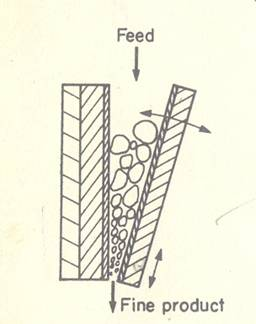
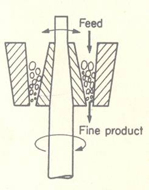
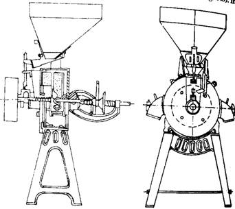
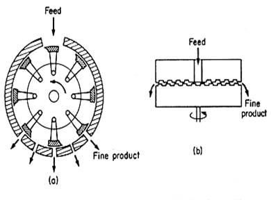
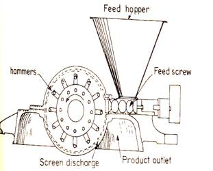

AENG 252 :: Lecture 09 :: SIZE REDUCTION – EQUIPMENT FOR SIZE REDUCTION, CARE AND MAINTENANCE

Unit operation in which the average size of solid pieces of food is reduced by the application of
- grinding
- compression
- impact forces
Related terms
- Homogenization or Emulsification
- Reduction in size of globules of immiscible liquids
- Atomization
- Size reduction of liquids by droplets
- Extrusion, Agglomeration or Forming
- Size enlargement
Benefits in food processing
- Increase in the surface area to volume ratio of the food
- Increases the rate of drying, heating or cooling
- improves the efficiency and rate of extraction of liquid components
- Eg. Fruit juice, cooking oil extraction
- When combined with screening, a predetermined range of particle sizes is produced which is important for the correct functional or processing properties of some products
- Eg. Icing sugar, spices, corn starch
- A similar range of particle sizes allows more complete mixing of ingredients
- Eg. Dried soup and cake mixes
Methods
- Chopping, cutting, slicing and dicing
- Large to medium (Cheese and sliced fruit for canning)
- Medium to small (Diced carrot)
- Small to granular (minced meat, flaked fish or nuts and shredded vegetables)
- Milling to powders or pastes
- Grated products
- Emulsification and homogenization
Theory
Three types of forces
- Compression
- Impact
- Shearing or Attrition forces
Stress is applied to a food; the resulting internal strains are first absorbed to cause deformation of the tissues. Amount of energy needed to fracture a food is determined by its hardness and tendency to crack – in turn depends on the structure of the food. Fewer the lines of weakness in a food, the higher are the energy input needed to cause fracturing. Harder foods absorb more energy and require a greater energy input to create fractures. Extent of size reduction, the energy expanded and the amount of heat generated in the food depend on both the size of the forces that are applied and the time that food is subjected to the forces. Compression forces are used to fracture friable or crystalline foods. Combined impact and shearing forces are necessary for fibrous foods. Shearing forces are used for fine grinding of softer foods.
Factors influencing the energy input
- Moisture content
- Wheat is conditioned to optimum moisture content
- Maize is thoroughly soaked and wet milled for complete disintegration
- Heat sensitivity of the food
- Determines the permissible temperature rise and the necessity to cool the mill
- Liquid N2 or solid CO2 are mixed with foods before milling to cool the product and to retain volatiles
- Quantum of the forces that are applied
- Time that food is subjected to the forces
Equations for energy requirement determination
Kicks law
- Energy required to reduce the size of particles is directly proportional to the ratio of the initial size of a typical dimension to the final size of that dimension
E = Kk ln (Df/Dp)
E – Energy required per mass of feed
Kk – Kick’s constant
Df – Average initial size of feed
Dp – Average size of product
Df / Dp – Size reduction ratio
- Coarse grinding has RRs below 8:1
- Fine grinding can exceed 100:1
- Grinding of coarse particles in which the increase in surface area per unit mass is relatively small, Kick's Law is a reasonable approximation
- Rittinger’s law
- States that the energy required for size reduction is proportional to the change in surface area of the pieces of food
- E = KR 1 1
Dp Df
- KR – Rittinger’s constant
- For the size reduction of fine powders, in which large areas of new surface are being created, Rittinger's Law fits the experimental data better.
Bond’s law
- The work required to form particles of size Dp from very large feed is proportional to the square root of the surface to volume ratio of the product
- P/f = 0.3162 wi 1 1
ÖDp Ö Df
P – Power in kW
f – feed rate, t/hr
Dp – 80% of the product passes through mesh of dia Dp, mm
Df – 80% of feed passes through mesh of dia, Df, mm
Wi – Work index
Gross energy requirement in kilowatt-hour per tonne of feed needed to reduce a very large feed to such a size that 80% of the product passes through a 100 micro meter screen
- An ideal size reduction equipment should fulfill the following conditions
- Large capacity
- Should yield a pre desired sized product or range of size
- Small power input requirement per unit of product handled
- Easy & trouble free operation
- Amount of power required to create smaller particles
- Desired uniformity of size
- Work required to strain the material is temporarily stored in the form of mechanical energy of stress.
- When external force exceeds the amount of stored mechanical energy, the material is disturbed beyond its strength and finally broken in to fragments – results in creation of new surface
- Solids have a certain amount of surface energy, thus for creation of new surface, work is required and supplied by the release of stress energy when material breaks.
- Stress energy excess of the new surface energy create is converted into heat energy.
Grinding
- Classified in to two
- Plain grinding
- Milled to a free flowing meal consisting of sufficiently uniform particle size
- Selective grinding
- Grinding operation is carried out in various stages depending upon the differences in structural and mechanical properties of components of grain
Degree of grinding
- Ratio of the overall surface area of the ground product to the overall surface area of the feed
Dg = Sp/Sf
Dg – degree of grinding
Sp – Overall surface area of product
Sf – Overall surface area of feed
Milling efficiency
- Product of coefficient of hulling (E hulling )and coefficient of wholeness of kernel (E wk)
- Coefficient of hulling
- Percentage of the hulled grains obtained from the total amount of grain input
- Coefficient of Wholeness of kernel
- Ratio of the amount of kernel, crushed grains and mealy waste obtained by any milling system
Size reduction machinery
- Crushers
- Grinders
- Fine grinders
- Cutting machines
Crushers
- Squeeze or press the material until it breaks
- Mostly used to break large pieces of solid materials into small lumps
- Use of crushers in agricultural operations is limited
Types
- Jaw crushers
- Gyratory crushers
Jaw crusher
- Feed is admitted between two jaws, which are open at the top like V
- One of the jaws is fixed and vertical, while the other is the swinging jaw
- This jaw reciprocates in a horizontal plane and makes the angle of 20-30° with the fixed jaw
- Movable jaw is operated by an eccentric unit so as to impart great compressive force
- Solids which has to be broken is caught between the two jaws
- Large lumps of solid materials are caught between the upper parts of the jaws
- Subsequently broken and dropped into the narrower space below
- Broken pieces are further reduced next time when jaws come closer.
- No. of strokes given to the movable jaw ranges between 250 to 400 times per minute

Gyratory crusher
- Jaws between which the solid materials fed are circular
- Material is being crushed at all times at some point
- Solids are caught between V shaped space between the head and casing
- Material is repeatedly broken in sufficiently small pieces to pass out from the bottom.
- Speed of crushing ranges between 125 to 425 gyrations per minute
- Discharge from the gyratory crusher is continuous
- Less maintenance is required as compared to jaw crusher
- Power requirement is low

Crushing rolls
- Mainly used for extraction of juice from sugarcane
- Two types
- Smooth roll crusher
- Serrated or toothed roll crusher
Smooth roll crusher
- Two heavy smooth faced roll rotating towards each other at same speed on parallel horizontal axes
- Size of the material caught by the rolls depends upon the coefficient of friction between the material and the roll surface
- Dp = 0.04R + g
Dp – maximum size of particle
R – roll radius
g – half of the width of gap between the rolls
- Used to make grits or meal from food grains
- One of the rolls should be spring loaded to avoid any damage to roll surface
- Extensively used for making food grains flakes
Serrated or toothed roll crusher
- Rolls are serrated as per need
- Much more versatile than smooth roll crusher
- Best example – Break and reduction rolls of wheat milling
- Disintegrators are toothed roll crushers in which the corrugated rolls are rotating at different speeds
- Size reduction is by compression, impact and shear and not by compression alone, as in the case of smooth roll crushers
- Can accommodate larger particles than smooth roll crushers
Crushing efficiency
- Ratio of the surface energy created by crushing to the energy absorbed by the solid
Grinders
- Used to mill the grains into powder
- Types
- Attrition mill
- Hammer mill
- Impactors
- Rolling compression mill
Attrition mill
- Also known as burr mill
- Grains are rubbed between the grooved flat faces of rotating circular disks
- Axis of the roughened disks may be horizontal or vertical
- One plate is stationary and fixed with the body of the mill while the other one is rotating disk
- Material is fed between the plates and is reduced by crushing and shear
- Mills with different patterns of grooves, corrugations on the plates perform a variety of operations
- Overfeeding
- lowers grinders performance
- Increases heat generation during milling
- Disks are 20-137 cm in dia and operated at 350 to 700 rpm

- Used for making whole grain and dehusked grain flour
- Use in spice grinding is limited
- Double runner disks type attrition mills are also available
- Used for grinding of soft materials
- Both disks are driven at high speed in opposite direction
- Operated between 1200 to 7000 rpm
- Capacity is large
Salient features
- Fineness of grinding is controlled by the type of plates and the gap between them
- Spacing between the plates is adjustable
- Arrangement is spring loaded
- to avoid damage to plates in case of overloading
- to overcome the damage to plates by foreign material coming along with the feed
- Lower initial cost
- Lower power requirements
Hammer mill
- Used for various types of size grinding jobs
- Size reduction takes place by impact force
- Consists of high speed rotor rotating inside a cylindrical casing
- Shaft is usually kept horizontal
- Materials are fed into the mill from the top of the casing and is broken by the rotating hammers and fall out through a screen at the bottom
- Feed is broken by the fixed or swinging hammers, pinned to a rotor
- Hammers are rotated between 1550 to 4000 rpm, strike and grind the material until it becomes small enough to pass through the bottom screen

- Fineness of grinding is controlled by the screen size
- There is less chances of damage of hammer in swinging hammer mill
- Can grind tough fibrous solids, steel chips, food grains, hard rock etc.
- Assumed to reduce size by impact of hammers
Salient features
- Simplicity and versatility in design
- Less chances of damage due to foreign objects
- High power requirement
- Capacity and power requirement depend on the nature of feed to be ground
- Used for poultry feed grinding, spices grinding
- Suitable for grinding of wet sorghum and millets
- Also used for potato, tapioca, banana flour making
Ball mill
- Cylindrical or conical shell slowly rotating about a horizontal axis.
- Half of its volume is filled with solid grinding balls
- Shell is made of steel lined with high carbon steel plate, porcelain or silica rock.
- Size reduction is achieved by impact of the balls when they drop from near the top of the shell
- Energy consumed in lifting the balls is utilized for grinding job
- When the ball mill is rotated , the balls are carried by the mill wall nearly to the top
- Balls are released by the gravitational pull and drop to the bottom and picked up again
- Centrifugal force keeps the ball in contact with the mill wall.
- Due to centrifugal force, if the speed of rotation of mill is faster, the balls are carried to more distance.
- Centrifuging: In case of too high speed, balls stick to mill wall and are not released
Critical speed: Rotational speed at which centrifuging occurs
- At this speed, no impact occurs hence little or no grinding results
- Operating speed must be kept less than the critical speed
- Speed at which the outermost ball released from the mill wall depends on the interaction of gravitational and centrifugal forces
- Critical speed can be determined by
- nc = 1/2ҙg/R-r
nc = critical speed, revolution/sec
g= acceleration due to gravity, 9.8 m/s2
R- radius of the mill, m
r = radius of the ball, m
Roller mills
- Roller mills are similar to roller crushers
- They have smooth or finely fluted rolls, and rotate at differential speeds.
- They are used very widely to grind flour.
- Because of their simple geometry, the maximum size of the particle that can pass between the rolls can be regulated.
- If the friction coefficient between the rolls and the feed material is known, the largest particle that will be nipped between the rolls can be calculated, knowing the geometry of the particles.
| Download this lecture as PDF here |